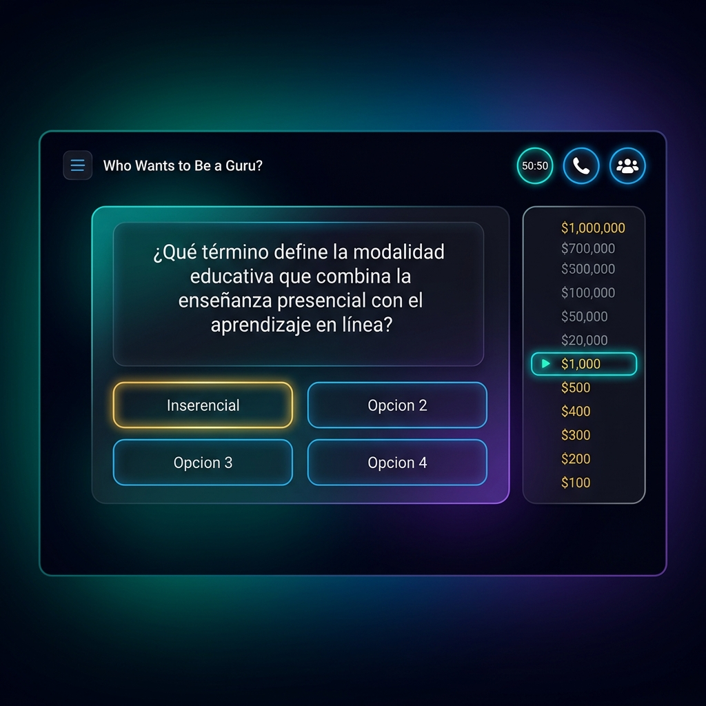

Innovación Educativa vs. Cultura E-Learning: Dos caminos hacia un mismo propósito
En el panorama educativo actual, es común escuchar términos como "Innovación Educativa" y "Cultura E-Learning" utilizándose casi de manera indistinta como sinónimos. Sin embargo, aunque ambos comparten la meta fundacional de transformar y enriquecer la calidad de la enseñanza, representan enfoques teórico-prácticos distintos con características metodológicas muy particulares.
¿Dónde radica su diferencia conceptual principal? ¿Cómo cambian los roles de comunicación de los estudiantes y los docentes bajo cada paradigma? Para dar respuesta rigurosa a estas interrogantes, hemos diseñado el siguiente cuadro comparativo detallado. Este recurso académico desglosa los conceptos de forma visual, demostrando que ambos modelos se complementan estratégicamente para tejer ecosistemas educativos más flexibles, interactivos e inclusivos. Haz clic en la imagen a continuación para ampliarla en el visor de alta resolución:

🎮 Demuestra tu criterio: Reto "¿Quién Quiere Ser Gurú?"
Como cierre de este análisis temático, te invitamos a participar en nuestro aclamado videojuego interactivo de preguntas y respuestas "¿Quién Quiere Ser Gurú de la Cultura E-Learning?". El juego consta de 15 desafiantes preguntas de opción múltiple basadas en las lecturas pedagógicas fundamentales de este blog (como Area & Adell, Salinas, Gairín, y más).
Cuentas con 3 comodines (50:50, Llamada al Amigo, Consulta al Público), seguros de avance y un tiempo límite por pregunta. ¿Serás capaz de alcanzar la cima teórica y ganar el millón virtual?

¿Quién Quiere Ser Gurú?
Demuestra tu conocimiento y criterio sobre aulas virtuales, metodologías constructivistas, estándares interoperables y gestión de la innovación educativa en este emocionante reto de preguntas y respuestas.
Discusión Académica